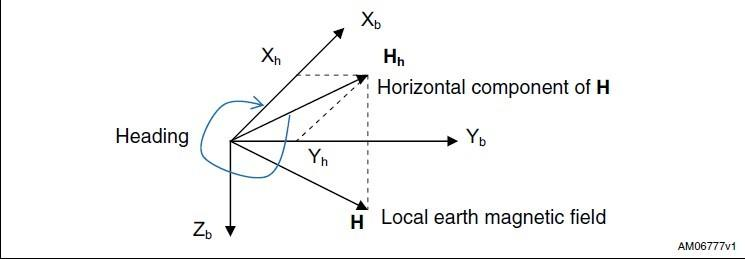

Compass V1.0
The Grove –6-Axis Accelerometer&Compass is a 3 - axis accelerometer combined with a 3 - axis magnetic sensor. It is based on the sensor module LSM303DLH which has a selectable linear acceleration full scale range of ±2g / ±4g / ±8g and a selectable magnetic field full scale range of ±1.3 /±1.9 / ±2.5 / ±4.0 / ±4.7 / ±5.6 / ±8.1 gauss. Both the magnetic parts and the accelerometer parts can be powered down separately to reduce the power consumption. The Arduino can get these data via the I2C interface with the given library for this module.
Model: SEN05072P
Specification
- I2C Interface
- Measuring scale selectable
- 6D orientation detection
- 2 independent programmable interrupt generators
- Power-down mode
Demonstration
The LSM303DLM is a 6D sensor module that contains a 3D accelerometer and a 3D magnetic sensor. It has an I2C digital interface so that the analog to digital converter is avoided.
The MCU can collect 6D sensor data directly through the I2C interface.OK, let's start on using this LSM303DLM 6D sensor module.
- Connect the 6-Axis Accelerometer&Compass to Seeeduino through the Grove - Base Shield using the I²C interface.
- Connect the Seeeduino to PC via a USB cable to power up this system.
- Download the demo code which shows how to calculate level and 6-Axis Accelerometer&Compass heading using the snazzy LSM303DLM.
- Upload the Code. Please click here if you do not know how to upload.
- Open the serial monitor, you will see the output result of Color Sensor as show below:
- 6. You can see the acceleration values and the clockwise angle between the magnetic north and x-axis.
the X/Y/Z shows the 3 axis acceleration; and then the angle between the magnetic north and x-axis calculated.
And also the the angle between the magnetic north and the projection of positive x-axis calculated。
please refer to here to know more about this parameter.


Note:
- All ST MEMS accelerometers are factory calibrated, allowing the user to avoid any further calibration for most of the applications. However, to reach a heading accuracy of below 2°, an easy calibration procedure is needed.
- When test The clockwise angle between the magnetic north and x-axis, you can align the device Xa axis to any direction, but do not make it face down. Refer to the below picture:

Resources
Copyright (c) 2008-2016 Seeed Development Limited (
www.seeedstudio.com /
www.seeed.cc)
This static html page was created from http://www.seeedstudio.com/wiki